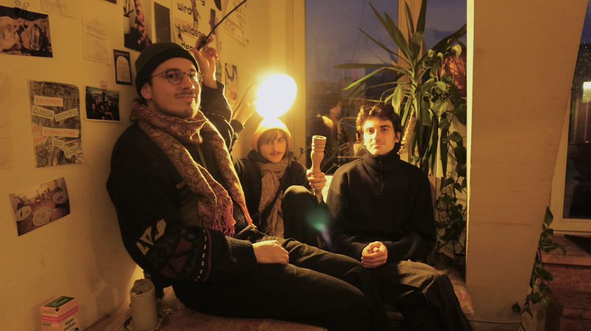
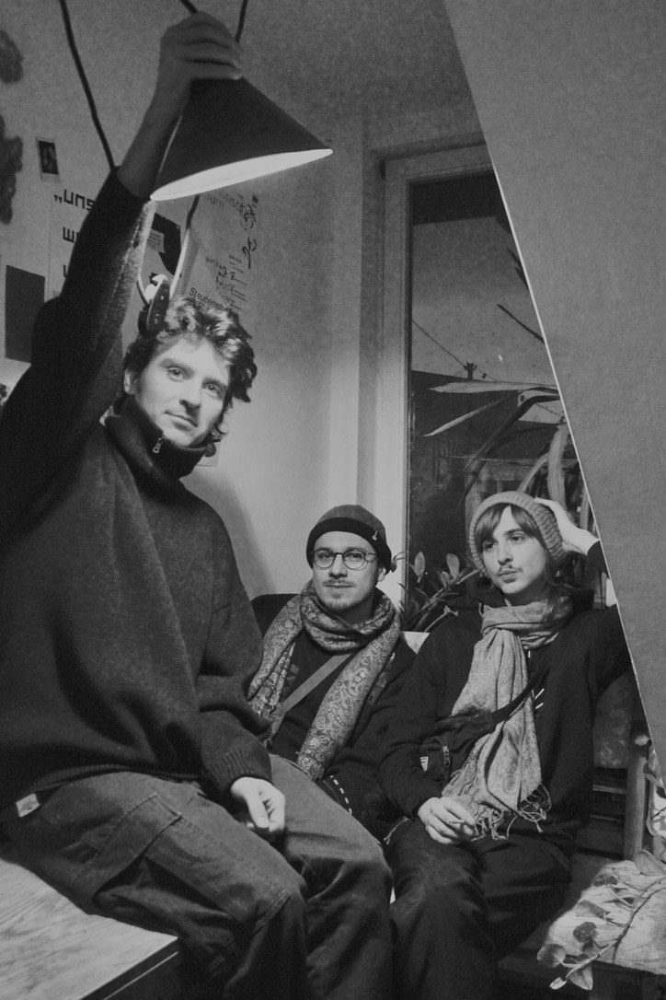
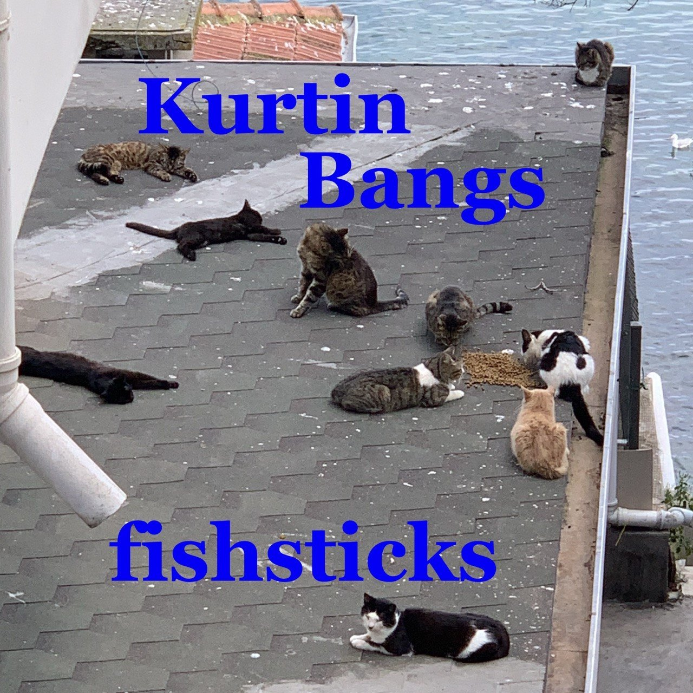
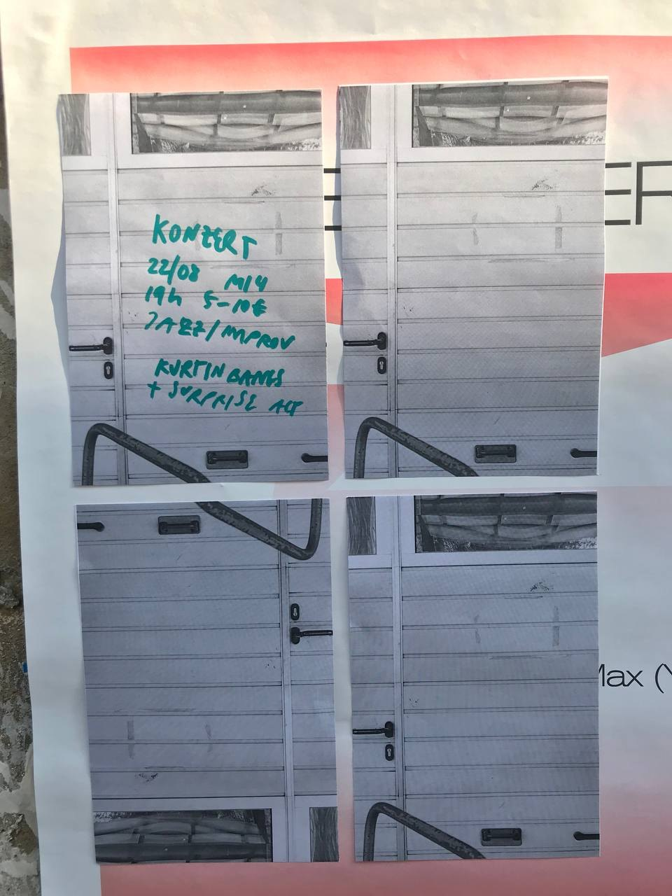
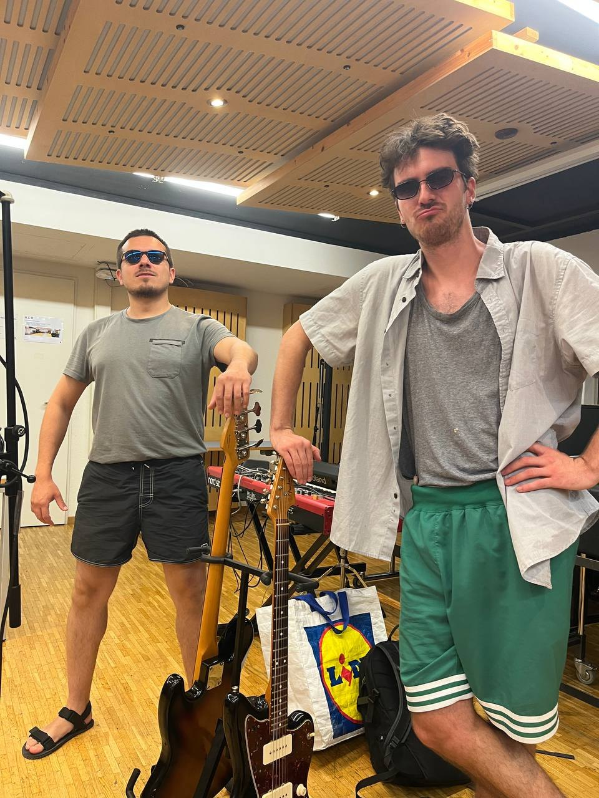

KURTIN
BANGS
POST-EVERYTHING
Slow-burning melodies, drifting textures and sudden walls of sound. Kurtin Bangs move between shoegaze, ambient, psychedelic rock, noise and free improvisation.
A shared intuition
for sound and form.
KURTIN BANGS are an instrumental trio formed by Marco Shevchenko (electric guitar), Felix Neumann (drums) and Thomas C. Tito (electric bass). The three musicians met while studying in Weimar, Germany, and began by exploring fully improvised concerts.
Over time, their shared intuition for form, timbre and dramatic sentimentality led them towards more song-like compositions — without losing the openness and spontaneity of real-time interaction.
Now based in Istanbul, Bern and Leipzig, the trio combines fragile melodies and head-nodding grooves with dense guitar textures, noise and expansive ambient passages. Their music is slow and thoughtful, yet energetic and unpredictable.

Let it drift.
Let it break.

Listen to
Kurtin Bangs.
Recordings, sketches and live material on SoundCloud.
Made in the room.
Changed in the moment.


Press material
& useful details.


For additional press material, image requests or interview inquiries, please get in touch.
LET'S
MEET IN
THE NOISE.
For concerts, festivals, collaborations and other inquiries, get in touch with the band.
[kurtinbangs@gmail.com] ↗